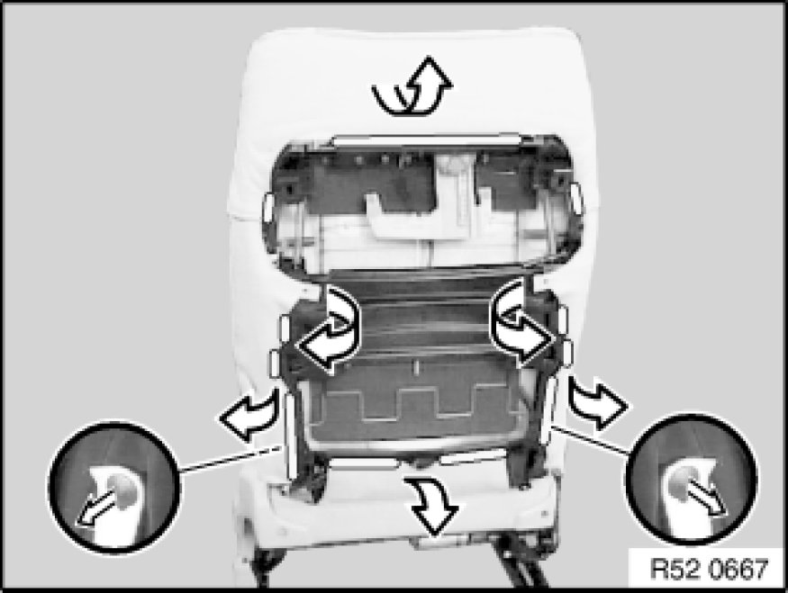
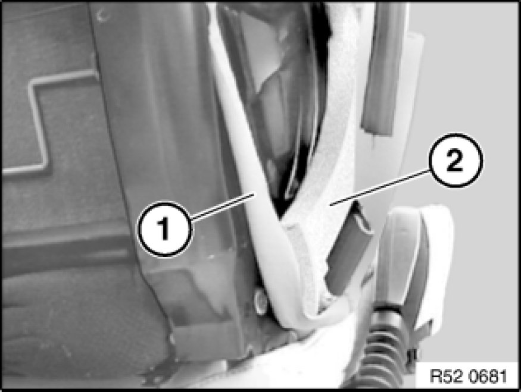
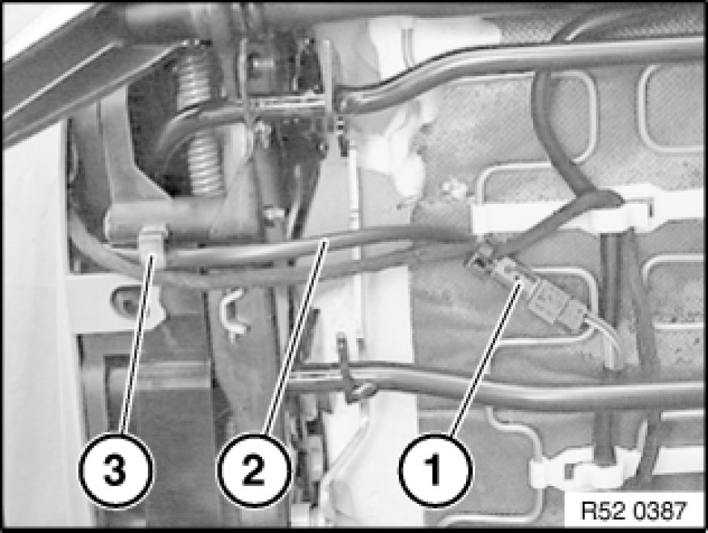
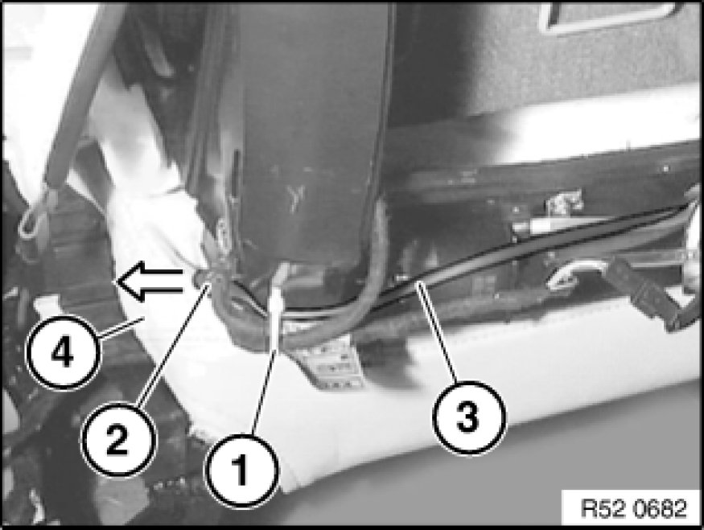
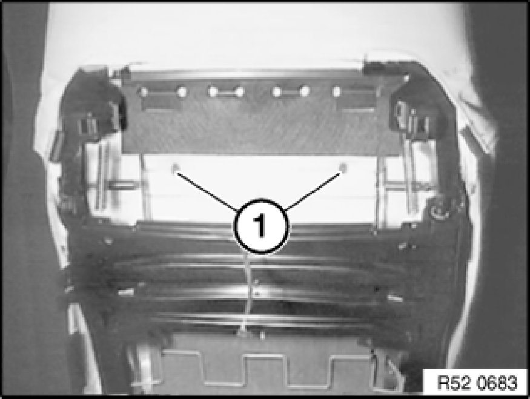
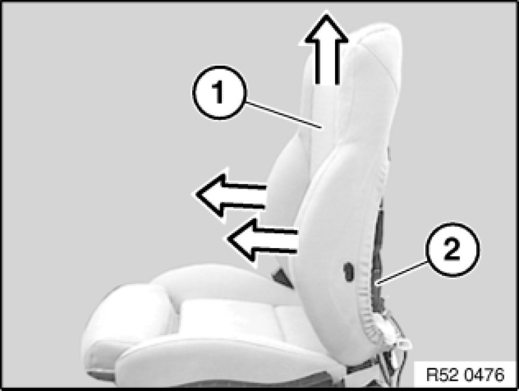
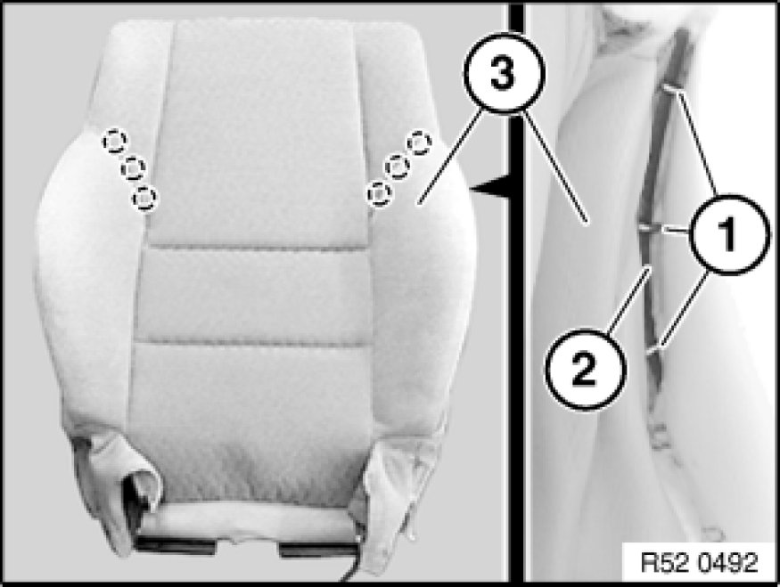
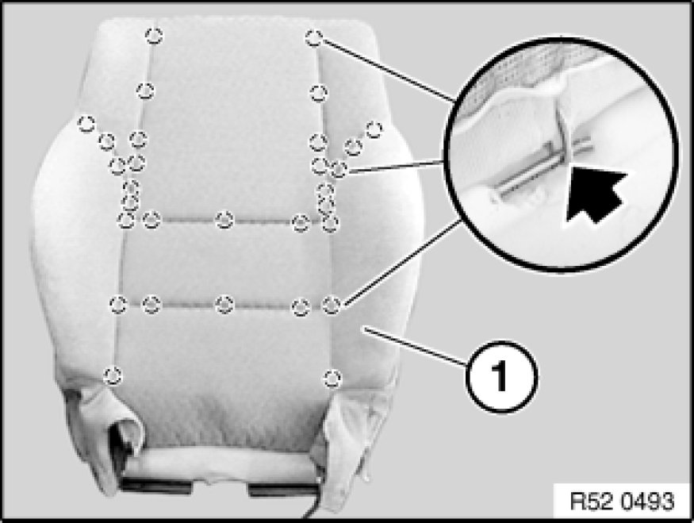
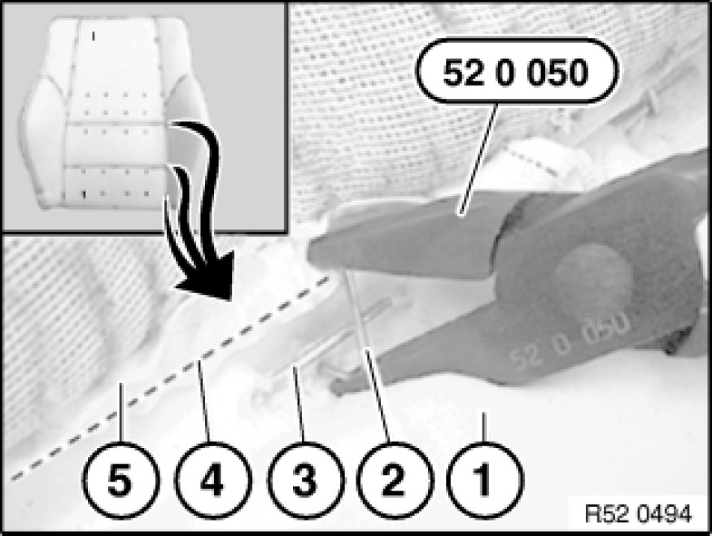
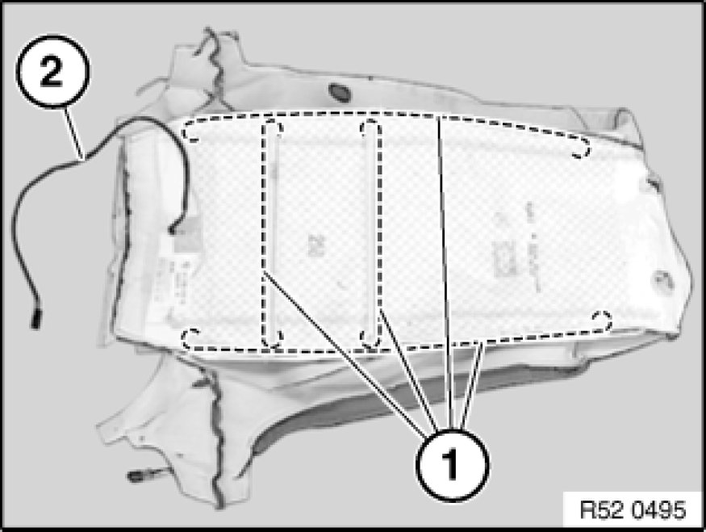

Replacing Backrest Cover for Left or Right Front Seat (Comfort)
52 17 405 - Replacing backrest cover for left or right front seat (comfort)

Special tools required:
- 52 0 050 52 0 050 Pliers
Special tools used:
- Pliers 52 0 050 52 0 050 Pliers

Necessary preliminary tasks:
- Remove front seat.
- Remove rear panel at top and bottom.

Unhook backrest cover from backrest frame.

Installation Note:
Guide cover lug (1) behind padding (2) and clip in (padding rests in a cover pocket).

Model with seat heating only:
Remove outer cover Removing and Installing/Replacing Outer Covers on Left or Right Front Seat (Sports/Electric) on front seat.
Unfasten plug connection (1).
Pull cable (2) out of holder (3). If necessary, cut cable ties.

Model with seat heating only:
Cut cable tie (1) and unclip cable holder (2).
Feed out cable (3) behind cover bridge (4).

Bend open clips (1) and remove.
Installation Note:
Install clips with pliers 52 0 050.

Unhook backrest cover (1) at bottom and side towards front and detach with padding upwards from backrest frame (2).
Note:
The work for "Removing backrest cover with padding" ends here.
Following operation:
Removing backrest cover from padding
and
Replacing padding
and
Replacing backrest cover

Carefully fold backrest cover (3) from padding (2) towards front and release clips (1).

Continue folding backrest cover (1) back and undo remaining clips.
Remove backrest cover (1) from padding.
Remove all remnants of clips from backrest cover (1) and padding.

Installation:
Bend new clip (2) closed with pliers 52 0 050 52 0 050 Pliers.
1. Support
2. Retainer
3. Trim thread in support
4. Trim wire in backrest cover
5. Backrest cover
Note:
The work for "Removing padding" ends here.

Pull trim threads (1) out of backrest cover.
Cut new backrest cover to size and insert trim threads (1).
2 - Seat heater cable